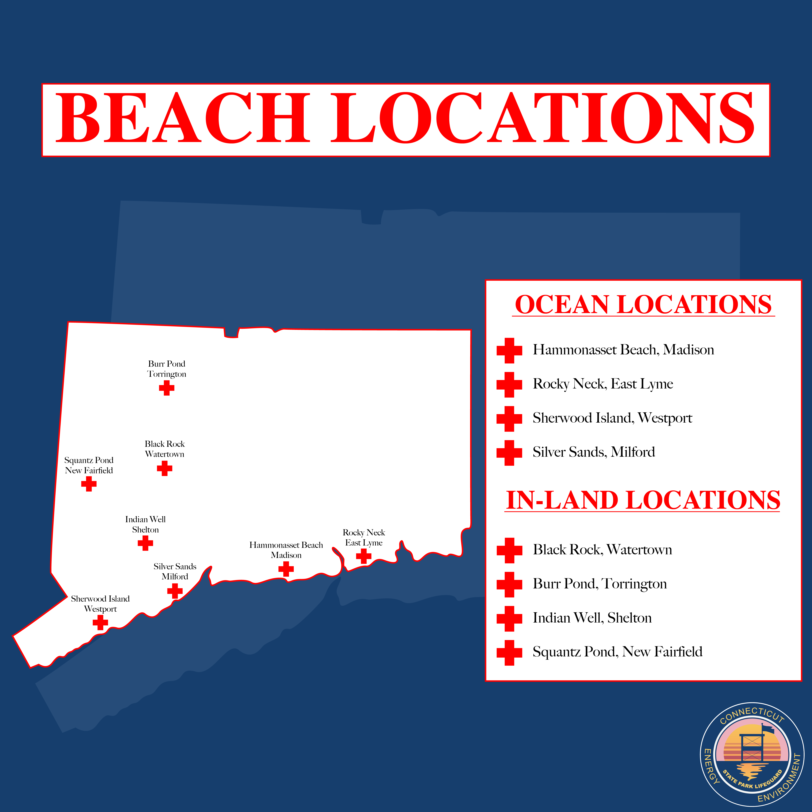
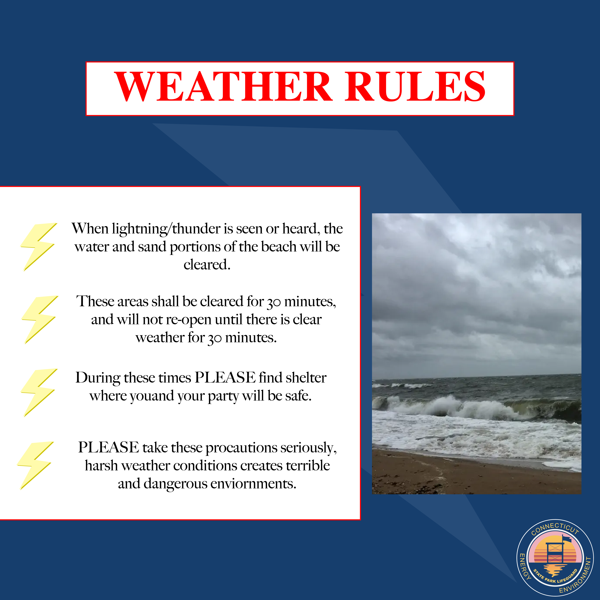
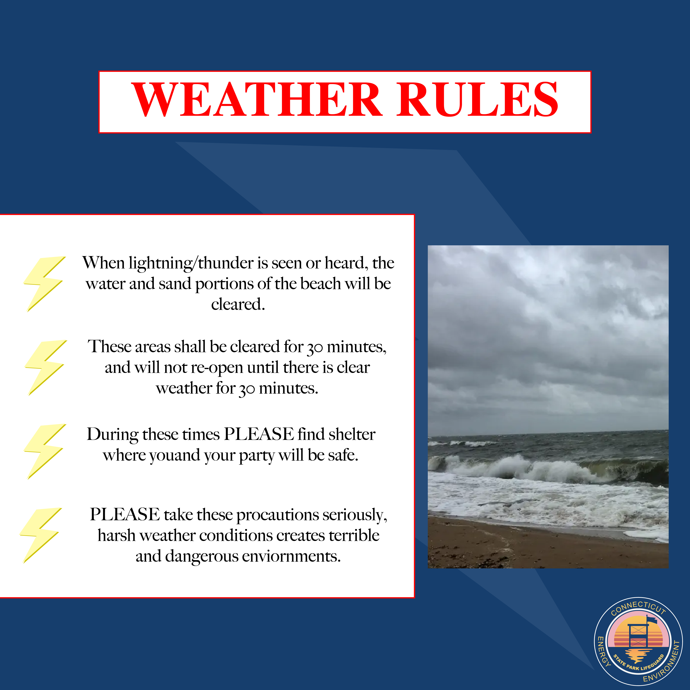
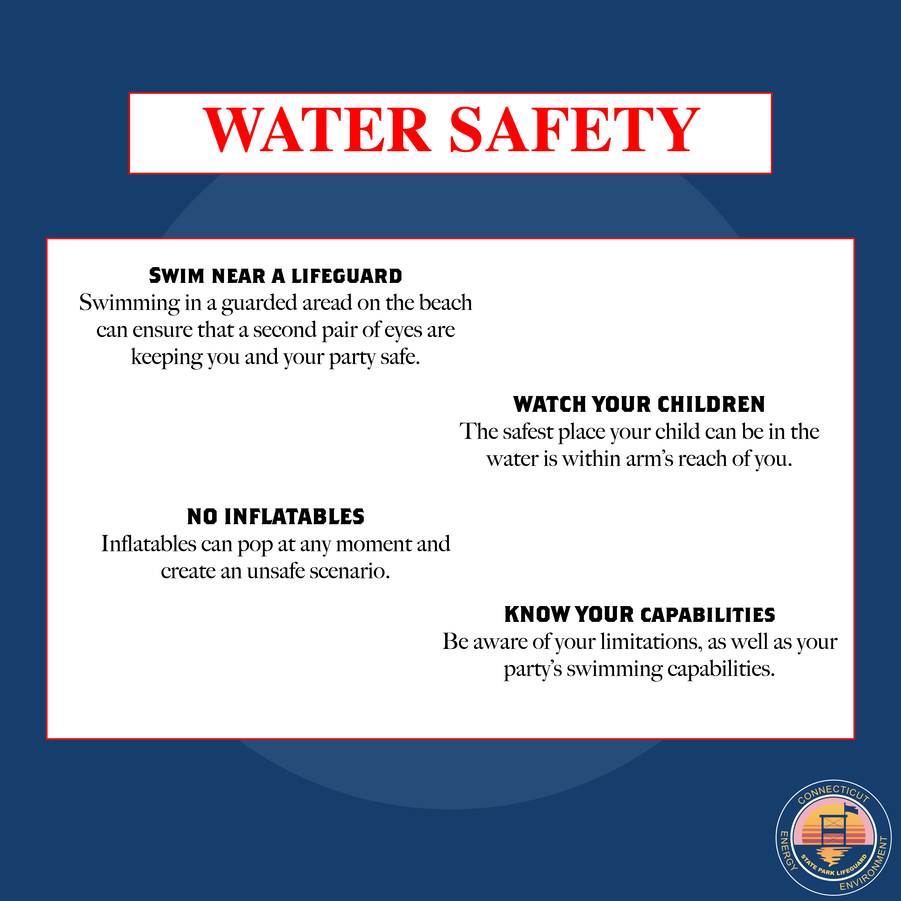
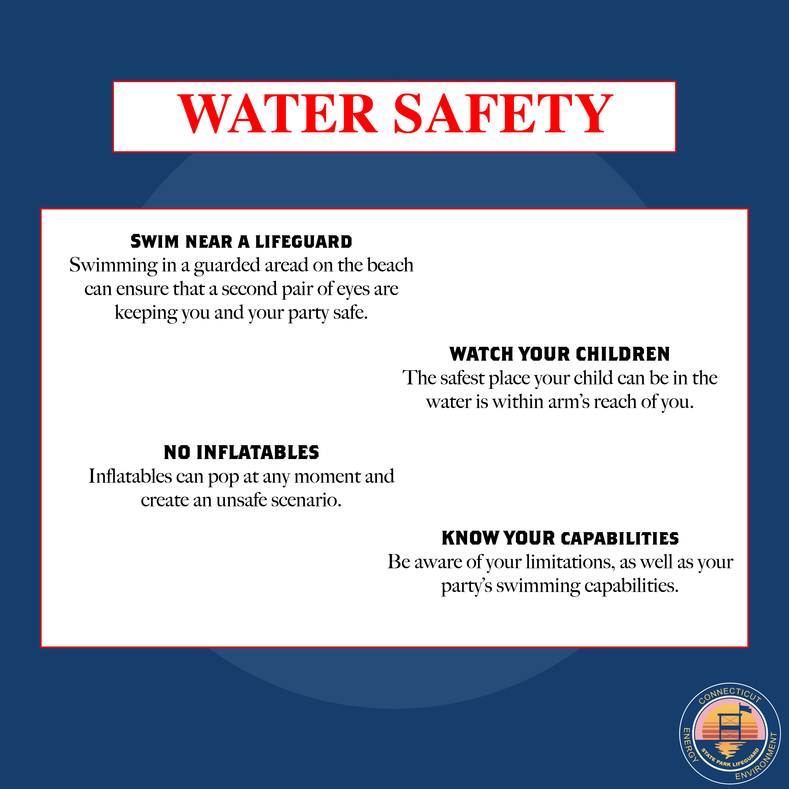
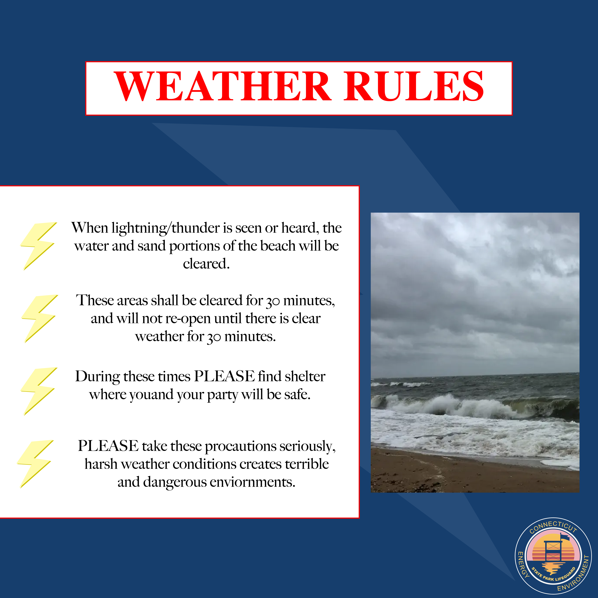
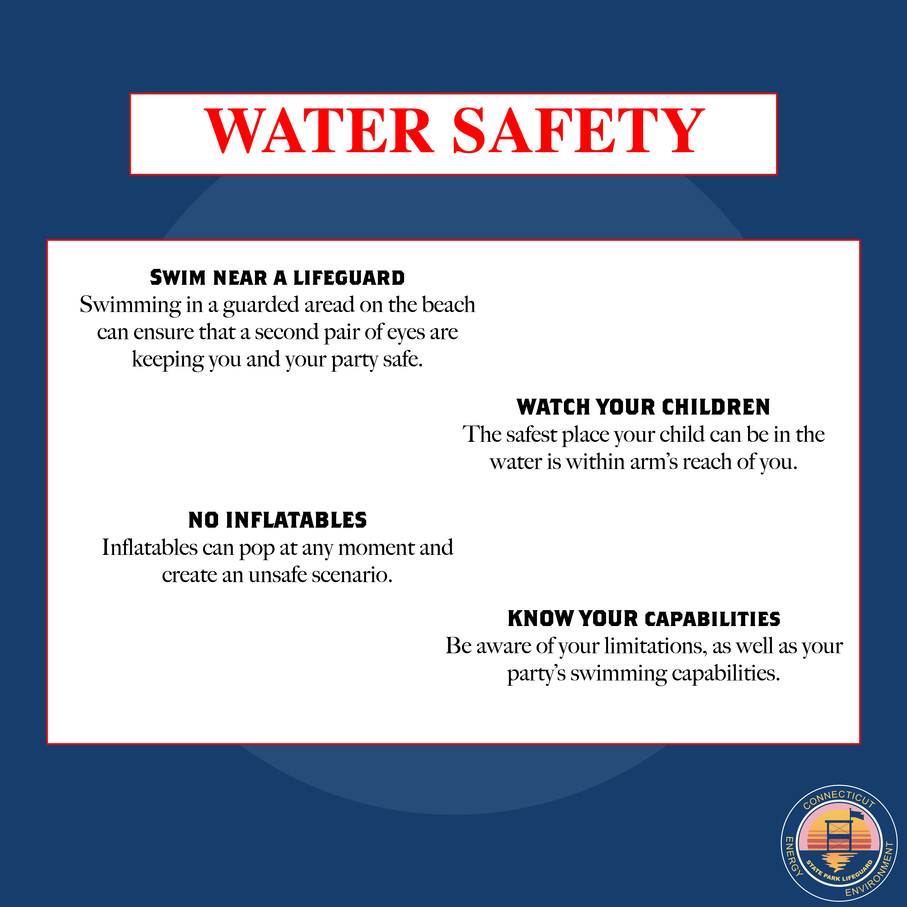
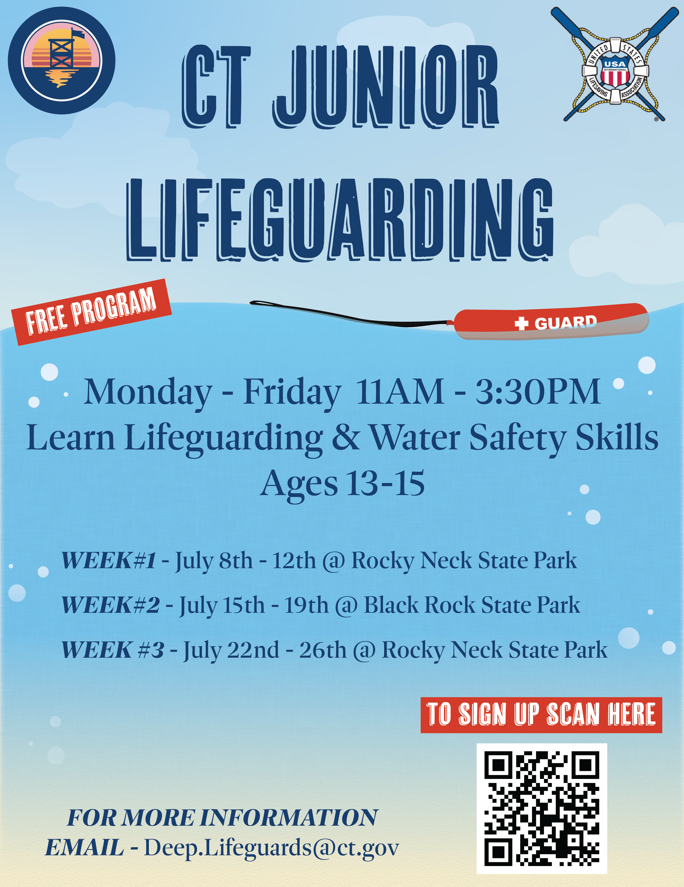
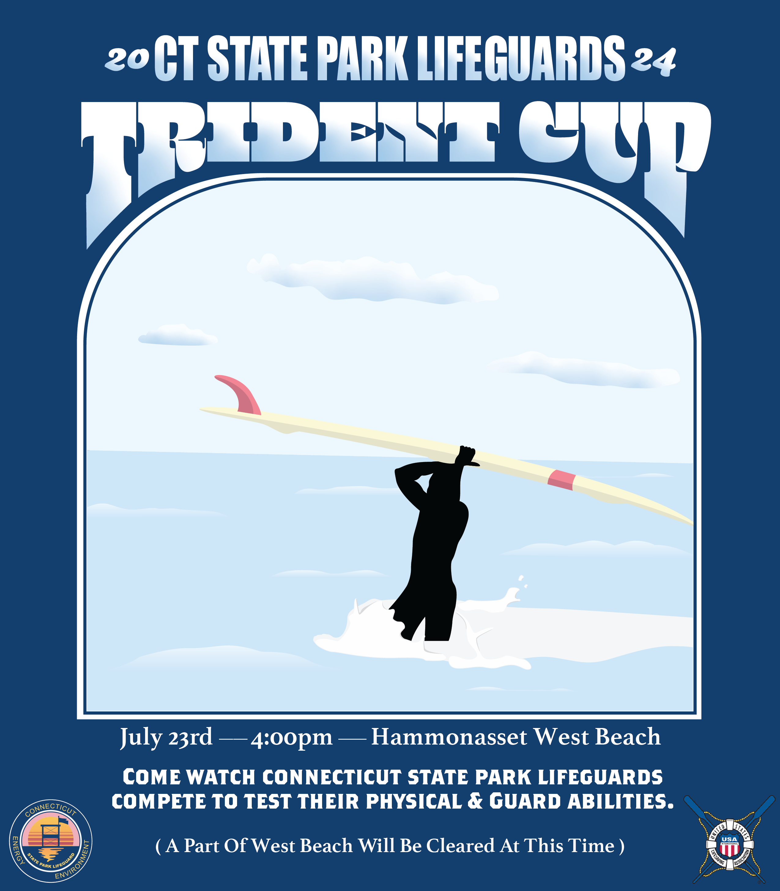

Beach Safety Week Infographics
For the Connecticut State Park Lifeguards I made a series of infographics that promoted 10 beach safety tips as well as a cover page for the tips and a highlight page showing all 10 of the tips. I used Adobe Illustrator and Adobe Photoshop to make all of these infographics with photos I had taken.
Wedding Highlight
In my senior year of high school I was hired to be an assistant videographer to film b-roll and accent shots during the wedding as well as manning the camera during the reception. Here is a small video I made out of the clips that I had taken at the wedding. This video was made on my own time for my own further of education and was not connected to the video she was paid to make. The music is Vide Games by Lana Del Ray and is only here for portfolio use.

 

 



Beach Guide Infrographics
Like the beach safety week infographics I made a series infographics that acted as a guide of how to stay safe at the Connecticut beaches. I made these infographics and you can see them on the Connecticut State Park Lifeguards Instagram page. I used mainly Adobe Illustrator to complete these.

